1. Introduction: Data Analysis Begins with Data
Imagine kijiye aap ek bade e-commerce platform (jaise Amazon ya Flipkart) ke Junior Data Analyst hain. Monday subah aapke manager aapko ek file bhejte hain jisme pichle mahine ke 10,000 orders ka record hai. File ka naam hai monthly_orders.csv.
Aapke manager ki requirements hain:
- "Sabhi orders ko Python mein load kijiye aur total revenue calculate kijiye!"
- "Category-wise sales ka breakdown nikal kar ek clean bar chart banaiye!"
- "Sirf high-value orders (> Rs 20,000) ko filter karke management ke liye ek separate Excel spreadsheet banaiye!"
- "Yeh sabhi processed files ek clean folder mein export karke share kijiye!"
Sochiye agar aapko in 10,000 records ko manual Python dictionaries ya lists mein type karna padta, toh kitne din lag jaate? Real-world data science mein koi bhi insaan data ko manually code ke andar hardcode nahi karta! Asli data science shuru hi tab hoti hai jab hum disk par rakhi hui external files ko Pandas DataFrame mein ingest karte hain.
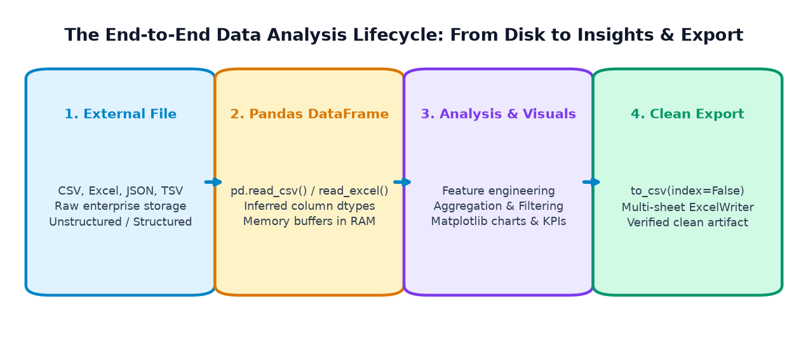
1. Reading (Input): Hard disk ya cloud par rakhi hui raw files (CSV, Excel, JSON, SQL) ko memory (RAM) mein laakar structured 2D DataFrame banana.
2. Writing (Output): Cleaned, filtered, ya aggregated DataFrame ko wapas safe, standard file format mein export karna taaki doosre software (Excel, PowerBI, Tableau, Web Apps) usse use kar sakein.
2. Understanding Common Data File Formats
Enterprise systems aur data pipelines mein data alag-alag formats mein store hota hai. Har format ka apna purpose, advantage, aur limitation hota hai:
| File Format | File Extension | Internal Data Structure | Main Advantage | Common Limitation | Pandas Reader & Writer |
|---|---|---|---|---|---|
| CSV (Comma-Separated) | .csv |
Plain text; commas separate fields, newlines separate records. | Universal compatibility; lightweight; fast C-parsing. | No formatting; no multiple sheets; datatypes not preserved in file. | pd.read_csv()df.to_csv() |
| Excel Spreadsheet | .xlsx / .xls |
Binary zipped XML; multi-sheet workbooks with cell formatting. | Non-programmer friendly; multiple sheets; charts & formulas. | Heavy file size; slower parsing; requires third-party engine (openpyxl). |
pd.read_excel()df.to_excel() |
| JSON Object Records | .json |
Key-value pairs and nested lists/arrays (JavaScript Object Notation). | Native web API standard; supports nested & hierarchical data. | Slightly more verbose than CSV; harder to inspect raw in Excel. | pd.read_json()df.to_json() |
| Plain-Text / TSV | .txt / .tsv |
Unstructured text or tab-delimited columns. | Minimal overhead; raw server logs & sensor streams. | Lacks standard schema; requires explicit parsing. | Python open()pd.read_csv(sep='\\t') |
Visual Anatomy of the Three Major Formats:
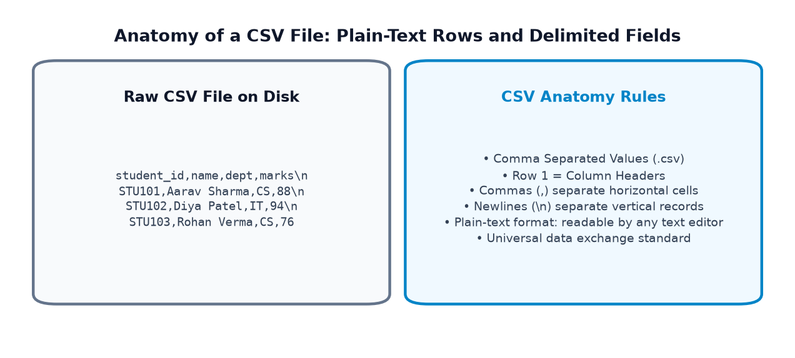
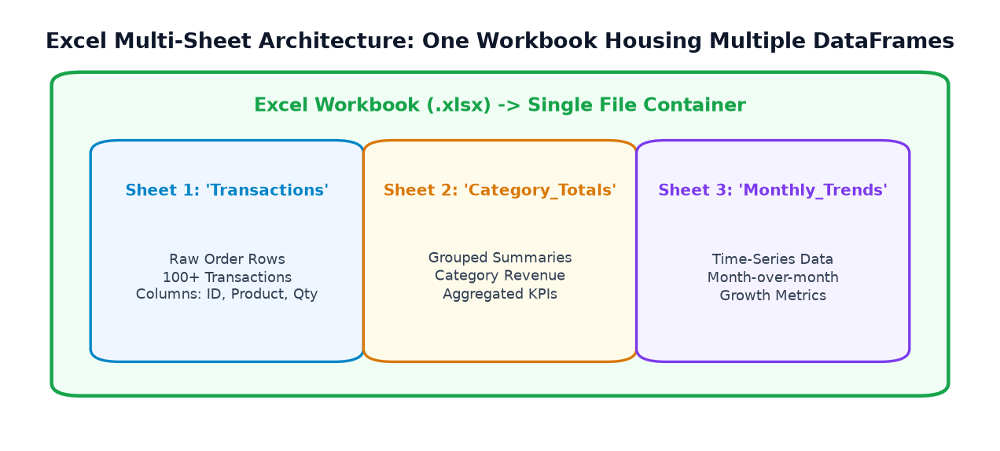
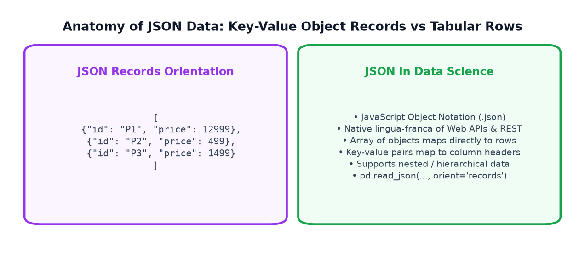
3. Reading CSV Files with pd.read_csv()
CSV (Comma-Separated Values) data science world ka sabse popular aur reliable format hai. Pandas mein CSV file read karne ke liye universal function hota hai: pd.read_csv(filepath).
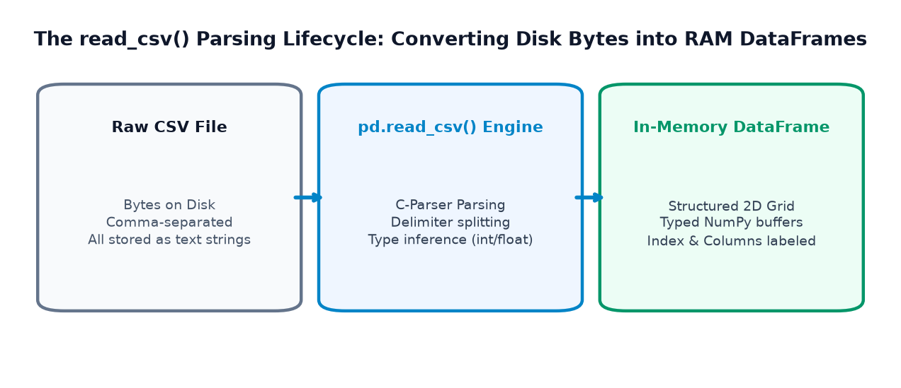
How pd.read_csv() Works Internally:
- Path Resolution: Specified file path ko hard drive par locate karta hai.
- Header Detection: Pehli row ko automatically column headers (
df.columns) bana deta hai. - Delimiter Splitting: Har line ko commas ke basis par horizontal cells mein todta hai.
- Type Inference (Automatic Casting): Columns ka content inspect karke automatically suitable datatype assign karta hai (jaise pure numbers ko
int64yafloat64, aur text koobject). - Index Assignment: Row labels ke liye default integer
RangeIndex (0, 1, 2...)assign karta hai.
Example 1: Reading Student Academic Records
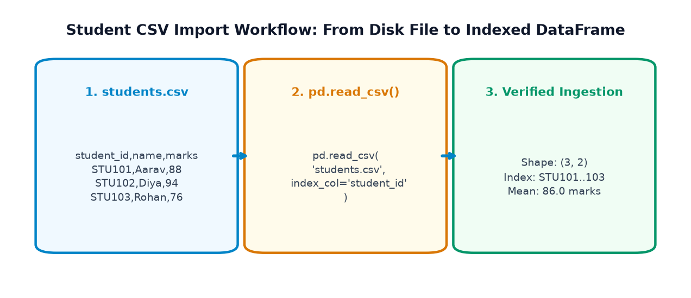
import pandas as pd # Reading student CSV from local path df_students = pd.read_csv('students_sample.csv') print("--- STUDENT DATAFRAME IMPORTED FROM CSV ---") print(df_students) print(f"\nDataset Dimensions: {df_students.shape[0]} Rows, {df_students.shape[1]} Columns") print(f"Batch Average Marks: {df_students['marks'].mean():.1f}")
Example 2: Reading E-Commerce Orders and Deriving Revenue
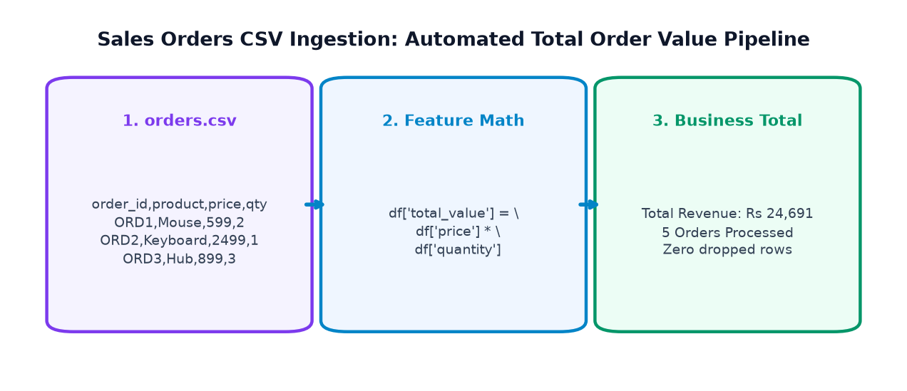
import pandas as pd # Load orders data df_orders = pd.read_csv('orders_sample.csv') # Perform vectorized revenue calculation df_orders['total_value'] = df_orders['quantity'] * df_orders['price'] print("--- ORDERS DATA WITH DERIVED TOTALS ---") print(df_orders[['order_id', 'product', 'quantity', 'price', 'total_value']]) print(f"\nTotal Gross Revenue: Rs {df_orders['total_value'].sum():,}")
4. Important read_csv() Parameters
Real-world CSV files kabhi bhi perfectly clean nahi hoti. Kabhi unme commas ke bajaye semicolons hote hain, kabhi header missing hota hai, aur kabhi missing values ko 'NA' ya 'missing' likha hota hai. read_csv() ke parameters in sabhi situations ko control karne ke liye banaye gaye hain:
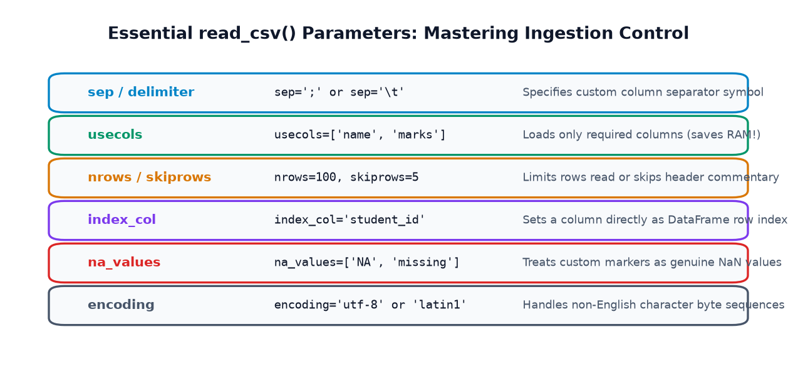
Deep Dive into Essential Parameters:
sep=';'yasep='\\t': Agar file comma-separated nahi hai, toh separator specify karta hai (e.g. European CSVs use;).header=None: Agar file mein pehli row headers nahi hai balki raw data hai. Manually names dene ke liyenames=['col1', 'col2']use hota hai.index_col='student_id': Kis column ko default 0, 1, 2 index ke bajaye primary row index banana hai.usecols=['name', 'marks']: Sirf specific columns ko memory mein load karta hai. Agar file 2GB ki hai aur aapko sirf 2 columns chahiye, toh yeh RAM bacha leta hai!nrows=100: Sirf pehli 100 rows read karta hai. Huge files ko inspect karne ke liye sabse best parameter hai.skiprows=5: File ke shuruati 5 rows (jaise metadata ya comments) ko skip kar deta hai.na_values=['missing', 'NA', '-']: In custom text strings ko automatic IEEE 754NaNmein convert kar deta hai.encoding='utf-8'yaencoding='latin1': File ke character encoding standard ko match karta hai.
Example 1: Parsing Semicolon-Separated Sales File
import pandas as pd # European formatted CSV using semicolons df_regional = pd.read_csv('sales_semicolon.csv', sep=';') print("--- REGIONAL SALES PARSED WITH sep=';' ---") print(df_regional) print(f"Total Regional Revenue: Rs {df_regional['revenue'].sum():,}")
Example 2: Combining usecols, nrows, index_col & na_values
import pandas as pd df_controlled = pd.read_csv( 'custom_params.csv', usecols=['id', 'full_name', 'score', 'status'], index_col='id', nrows=4, na_values=['missing', 'NA'] # Converts 'missing' and 'NA' to real NaN ) print("--- CONTROLLED INGESTION RESULT ---") print(df_controlled) print("\nMissing Values Count per Column:") print(df_controlled.isna().sum())
5. Writing CSV Files with DataFrame.to_csv()
Jab aap dataset ko filter, clean ya aggregate kar lete hain, toh use wapas hard disk par save karne ke liye df.to_csv(filepath) use kiya jaata hai.
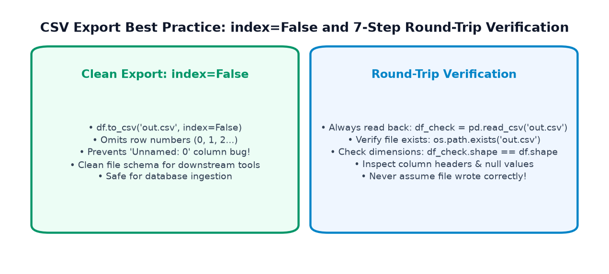
Agar aap bina arguments ke df.to_csv('output.csv') likhte hain, toh Pandas row numbers (0, 1, 2...) ko pehle column ke roop mein file mein save kar deta hai.
Jab agle din koi doosra programmer us file ko pd.read_csv() se read karega, toh use ek bekaar column dikhega jiska naam hoga: Unnamed: 0!
Correct Standard Rule: Hamesha df.to_csv('output.csv', index=False) pass karein!
Example 1: Exporting Student Results with Round-Trip Verification
import numpy as np import pandas as pd df = pd.DataFrame({ 'student_id': ['S101', 'S102', 'S103'], 'name': ['Aarav', 'Diya', 'Rohan'], 'marks': [88, 94, 76] }) # Add derived result df['result'] = np.where(df['marks'] >= 85, 'Distinction', 'Merit') # 1. Export Clean CSV (index=False) df.to_csv('exported_students_clean.csv', index=False) print("File successfully exported with index=False!") # 2. Round-Trip Verification: Read back and assert equality! df_verified = pd.read_csv('exported_students_clean.csv') print("\n--- VERIFIED FILE READ BACK FROM DISK ---") print(df_verified) print(f"Integrity Check: Identical Data? {df_verified.equals(df)}")
Example 2: Demonstrating the 'Unnamed: 0' Trap
import pandas as pd # Flawed export without index=False df.to_csv('flawed_export.csv') # index=True by default # Reading it back reveals the extra corrupted column! df_flawed = pd.read_csv('flawed_export.csv') print("--- FLAWED EXPORT READ BACK ---") print(df_flawed.columns.tolist())
6. Reading Excel Files (.xlsx) with pd.read_excel()
Corporate environments mein business managers, finance teams, aur operations leads data ko Microsoft Excel (.xlsx) files mein exchange karte hain. Ek Excel file ek Workbook hoti hai jisme multiple Worksheets (Tabs) ho sakte hain.
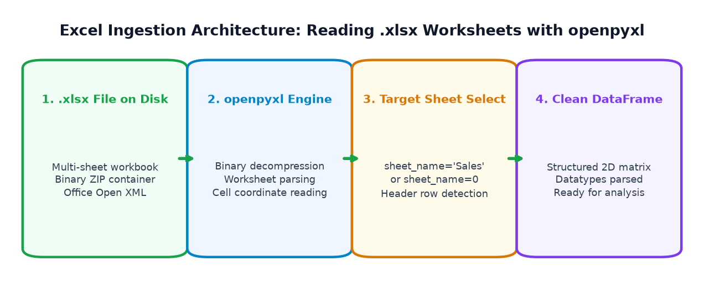
Key Differences: CSV vs Excel
- CSV ek single flat table hota hai; Excel workbook mein multiple named sheets ho sakti hain.
- CSV plain-text hota hai (lightweight); Excel ek compressed binary ZIP format hota hai (XML files andar packed hoti hain).
- Pandas ko Excel read karne ke liye ek external engine ki zaroorat hoti hai:
openpyxl(for.xlsx) yaxlrd(for older.xls).
The sheet_name Parameter:
pd.read_excel('file.xlsx'): By default, pehli sheet (Sheet 0) read karta hai.pd.read_excel('file.xlsx', sheet_name='Sales'): Specific named sheet load karta hai.pd.read_excel('file.xlsx', sheet_name=1): Zero-based integer index se second sheet load karta hai.pd.read_excel('file.xlsx', sheet_name=None): Sabhi sheets ek sath read karta hai aur ek dictionary of DataFrames return karta hai:{'Sheet1': df1, 'Sheet2': df2}!
Example: Reading Multi-Sheet Excel Workbook
import pandas as pd # 1. Read specific sheet 'Transactions' df_transactions = pd.read_excel('company_performance.xlsx', sheet_name='Transactions') print("--- TRANSACTIONS SHEET ---") print(df_transactions) # 2. Read specific sheet 'Summary' df_summary = pd.read_excel('company_performance.xlsx', sheet_name='Summary') print("\n--- CATEGORY SUMMARY SHEET ---") print(df_summary)
7. Writing Multi-Sheet Excel Workbooks with pd.ExcelWriter
Agar aapko sirf ek single DataFrame Excel mein export karna ho, toh syntax simple hai: df.to_excel('report.xlsx', sheet_name='Sheet1', index=False).
Lekin agar aapko ek hi Excel file ke andar multiple sheets (jaise Orders, Category Summary, aur Financials) write karni hon, toh aap pd.ExcelWriter context manager use karte hain:
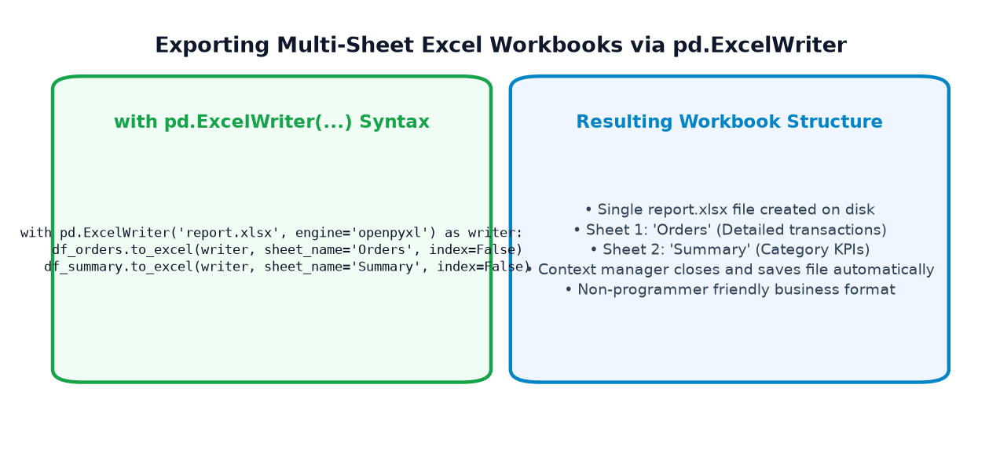
Example: Enterprise Multi-Tab Excel Workbook Export
import pandas as pd df_sales = pd.DataFrame({ 'order_id': ['O1', 'O2', 'O3'], 'product': ['Mouse', 'Keyboard', 'Monitor'], 'revenue': [1198, 2499, 14499] }) df_summary = pd.DataFrame({ 'category': ['Peripherals', 'Displays'], 'total_revenue': [3697, 14499] }) # Use pd.ExcelWriter to bundle multiple sheets with pd.ExcelWriter('company_performance.xlsx', engine='openpyxl') as writer: df_sales.to_excel(writer, sheet_name='Transactions', index=False) df_summary.to_excel(writer, sheet_name='Summary', index=False) print("Successfully exported multi-sheet workbook 'company_performance.xlsx'!")
8. Reading and Writing JSON Data
Modern web development, cloud microservices, aur REST APIs mein tabular CSV ke bajaye JSON (JavaScript Object Notation) standard format hota hai. Web application jab server se communicate karti hai, toh payload JSON format mein receive hota hai.
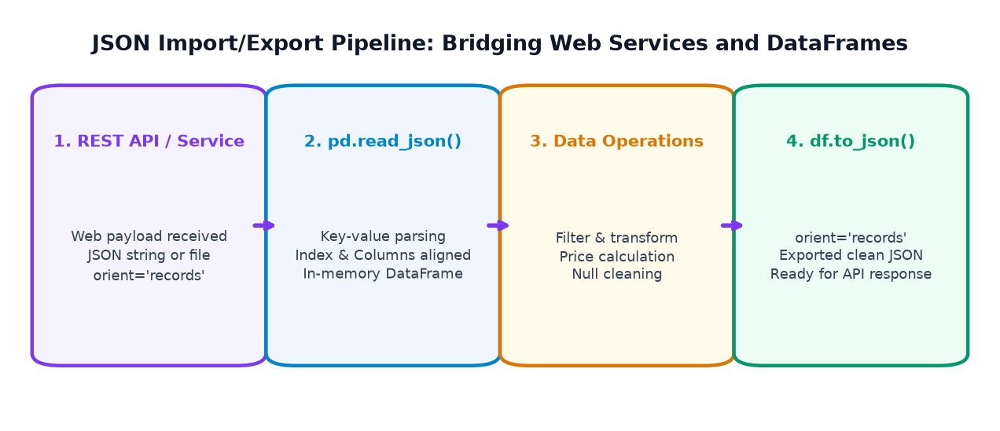
Understanding orient='records'
JSON ko DataFrames ke sath convert karte waqt sabse standard format hota hai orient='records'. Isme data list of dictionaries ke roop mein store hota hai:
[{"product_id": "P1", "name": "Chair", "price": 12999}, {"product_id": "P2", ...}]
- Reading:
pd.read_json('data.json', orient='records') - Writing:
df.to_json('data.json', orient='records', indent=2)
import pandas as pd df_prod = pd.DataFrame({ 'product_id': ['P1', 'P2', 'P3'], 'name': ['Ergo Chair', 'Desk Mat', 'Desk Lamp'], 'price': [12999, 499, 1499] }) # 1. Export to clean JSON with records orientation df_prod.to_json('products.json', orient='records', indent=2) print("JSON file written to disk!") # 2. Read JSON back into Pandas df_imported_json = pd.read_json('products.json', orient='records') print("\n--- DATAFRAME RECONSTRUCTED FROM JSON ---") print(df_imported_json) print(f"\nExact Match with Original? {df_imported_json.equals(df_prod)}")
9. Reading & Writing Plain-Text Files (.txt / .tsv)
Aksar humein unstructured logs (jaise server error logs) ya tab-separated datasets (TSV) milte hain. Dono situations ke liye alag-alag tools use hote hain:
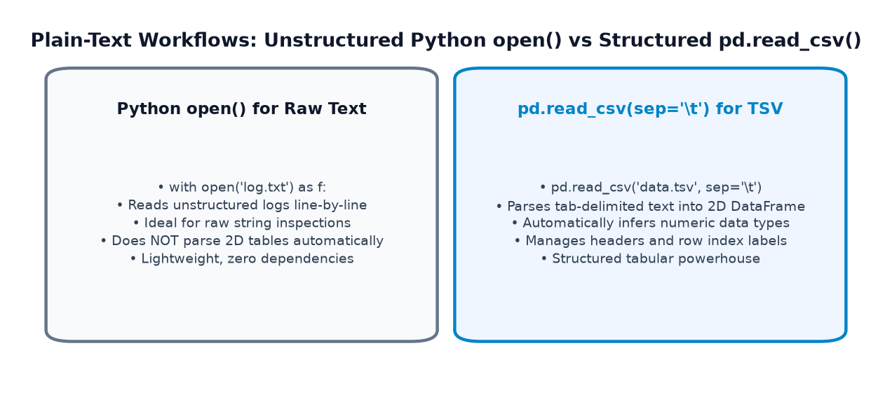
1. Python's Built-in open() for Raw Unstructured Logs
Agar file tabular nahi hai balki raw text lines hain, toh safe context manager with open(...) use karein:
# Writing raw log entries with open('sensor_log.txt', 'w', encoding='utf-8') as f: f.write("2026-01-15 08:00:00 - Temperature: 24.5 C - OK\\n") f.write("2026-01-15 08:05:00 - Temperature: 24.8 C - OK\\n") f.write("2026-01-15 08:10:00 - Temperature: 28.2 C - ALERT\\n") # Reading raw log entries with open('sensor_log.txt', 'r', encoding='utf-8') as f: logs = f.readlines() print("Total Log Entries:", len(logs)) print("Alert Entry:", logs[2].strip())
2. Reading Tab-Delimited TSV Files with pd.read_csv()
Agar text file ke columns tabs (\\t) se separated hain, toh pd.read_csv(sep='\\t') use karein:
import pandas as pd df_tsv = pd.read_csv('measurements.tsv', sep='\\t') print("--- PARSED TAB-SEPARATED TSV ---") print(df_tsv)
10. File Paths, Folders & Cross-Platform Portability
Data loading mein sabse pehla hurdle code nahi, balki File Paths hote hain. 50% beginners ka code isliye crash hota hai kyuki Python ko file milti hi nahi hai!
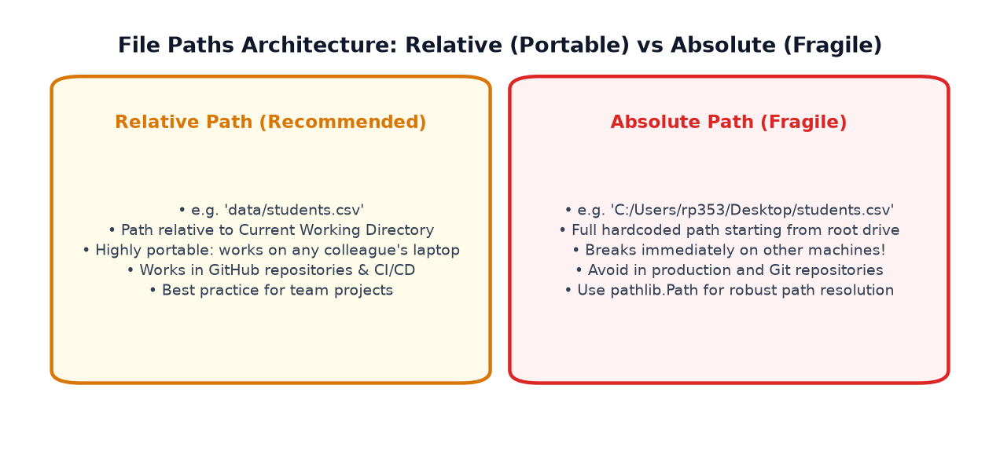
Relative vs Absolute Paths:
- Relative Path (RECOMMENDED): Current Working Directory ke reference se file ka rasta batana (jaise
'data/students.csv'ya'../reports/sales.csv').
Advantage: Yeh path portable hota hai! Aapka code kisi bhi teammate ke computer par ya cloud server par bina kisi change ke chalega. - Absolute Path (AVOID IN PRODUCTION): Hard drive ke root letter se pura rasta likhna (jaise
'C:\\Users\\Rahul\\Desktop\\data.csv').
Problem: Yeh dusre computer par turant crash ho jayega kyuki wahan user ka naam 'Rahul' nahi hoga!
Modern Path Handling with Python's pathlib.Path:
Windows backslashes (\\) aur Mac/Linux forward slashes (/) ke jhanjhat se bachne ke liye modern Python ka pathlib.Path use karein:
import os import pandas as pd from pathlib import Path # 1. Inspect Current Working Directory print("Current Working Directory:", Path.cwd()) # 2. Build cross-platform relative path safely data_dir = Path('reports') / 'sales' data_dir.mkdir(parents=True, exist_ok=True) # Safe folder creation file_path = data_dir / 'daily_summary.csv' print("Target File Path:", file_path) # 3. Always check if file exists before reading if file_path.exists(): df = pd.read_csv(file_path) else: print(f"Notice: {file_path.name} not found yet; creating directory ready for export!")
11. Handling Common Import Problems & Debugging
Jab aap external files import karte hain, toh data pipelines mein 4 sabse common errors aate hain. Inke symptoms aur fixes ko achhi tarah samajh lijiye:
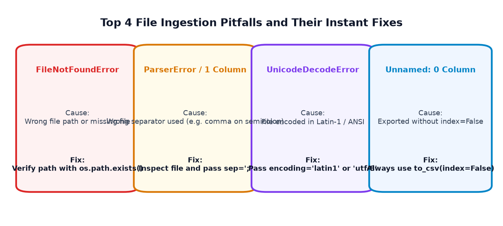
1. Problem: FileNotFoundError: [Errno 2] No such file or directory
- Why It Happens: Python jahan run ho raha hai (Working Directory) aur jahan file rakhi hai, unka path match nahi ho raha hai.
- Fix:
import os; print(os.getcwd())run karke check karein ki Python kahan se execute ho raha hai, aur file ka relative path sahi karein.
2. Problem: Single Messy Column (Parser Error)
- Symptom: DataFrame print karne par sabhi columns ek hi column mein chipak jaate hain (jaise
'name;age;dept'). - Why It Happens: File semicolon ya tab se separated thi, lekin aapne default comma delimiter use kiya.
- Fix: Explicit separator pass karein:
pd.read_csv('file.csv', sep=';').
3. Problem: Leading and Trailing Whitespace in Headers
- Symptom:
df['marks']run karne parKeyError: 'marks'raise hota hai. Lekindf.columnsprint karne par' marks '(with spaces) dikhta hai. - Fix: Ingestion ke turant baad columns ko strip karein:
df.columns = df.columns.str.strip().
4. Problem: UnicodeDecodeError: 'utf-8' codec can't decode byte
- Why It Happens: File purani Windows application ya Excel se export hui thi jisme UTF-8 ke bajaye Latin-1 (ISO-8859-1) encoding thi.
- Fix:
pd.read_csv('file.csv', encoding='latin1')pass karein.
import pandas as pd # Demonstration: Cleaning whitespace from column headers df_raw = pd.DataFrame({ ' student_name ': ['Aarav', 'Diya'], ' marks ': [88, 94] }) print("Messy Headers:", df_raw.columns.tolist()) # Strip all spaces vectorized df_raw.columns = df_raw.columns.str.strip() print("Cleaned Headers:", df_raw.columns.tolist()) print("Safe Column Access:", df_raw['marks'].tolist())
12. The Industrial 7-Step Data Export & Verification Protocol
Professional production pipelines mein ek golden rule hota hai: "Never assume an export succeeded until you've verified it from disk!"
Hamesha is 7-step protocol ko follow karein:
| Step | Protocol Action | Standard Python / Pandas Command |
|---|---|---|
| 1 | Load Source Dataset | df = pd.read_csv('input.csv') |
| 2 | Inspect Baseline Dimensions | initial_rows, initial_cols = df.shape |
| 3 | Execute Calculations & Filters | df_processed = df[df['status'] == 'Active'].copy() |
| 4 | Export Clean Artifact | df_processed.to_csv('output.csv', index=False) |
| 5 | Verify File Exists on Disk | assert os.path.exists('output.csv') |
| 6 | Read File Back (Round-Trip) | df_check = pd.read_csv('output.csv') |
| 7 | Assert Dimensional & Data Integrity | assert df_check.shape == df_processed.shape |
13. Real-World Mini-Project 1: Student Performance Report
Chaliye pure read → inspect → calculate → filter → export → verify lifecycle ko ek complete 10-step guided mini-project mein implement karte hain:
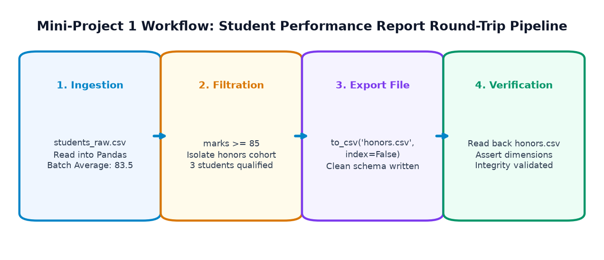
import os import pandas as pd # ============================================================================== # STEP 1: Simulate Inbound CSV on Disk # ============================================================================== csv_data = """student_id,student_name,department,marks,attendance STU101,Aarav Sharma,CS,88,92 STU102,Diya Patel,IT,94,96 STU103,Rohan Verma,CS,76,85 STU104,Ananya Iyer,ECE,68,78 STU105,Kabir Singh,IT,91,90 STU106,Meera Nair,CS,84,88""" with open('students_raw.csv', 'w', encoding='utf-8') as f: f.write(csv_data) # ============================================================================== # STEP 2 & 3: Read and Inspect Dataset # ============================================================================== df = pd.read_csv('students_raw.csv') print(f"Step 3: Ingested {df.shape[0]} rows and {df.shape[1]} columns.") # ============================================================================== # STEP 4: Calculate Batch Summary Metrics # ============================================================================== batch_avg = df['marks'].mean() print(f"Step 4: Overall Batch Average Marks -> {batch_avg:.2f}") # ============================================================================== # STEP 5: Filter Distinction Cohort (Marks >= 85) # ============================================================================== df_honors = df[df['marks'] >= 85].copy() print(f"Step 5: Isolated {len(df_honors)} distinction students.") # ============================================================================== # STEP 7: Export Clean Results (index=False) # ============================================================================== output_file = 'students_honors_export.csv' df_honors.to_csv(output_file, index=False) # ============================================================================== # STEP 8 & 9: Round-Trip Read Back & Automated Integrity Verification # ============================================================================== assert os.path.exists(output_file), "Export file missing on disk!" df_verified = pd.read_csv(output_file) assert df_verified.shape == (3, 5) assert df_verified.equals(df_honors.reset_index(drop=True)) print(" --- STEP 10: VERIFIED HONORS REPORT ---") print(df_verified[['student_id', 'student_name', 'department', 'marks']]) print(" All 10 Project Steps Passed with 100% Data Integrity!")
14. Real-World Mini-Project 2: E-Commerce Sales Report
Ab business analytics scenario mein multi-sheet Excel export aur category aggregation pipeline build karte hain:
import pandas as pd # 1. Ingest raw transactions CSV sales_csv = """order_id,product,category,quantity,unit_price ORD101,Ergonomic Chair,Furniture,5,12999 ORD102,Mechanical Keyboard,Peripherals,15,2499 ORD103,USB-C Hub,Accessories,30,899 ORD104,27-inch 4K Monitor,Displays,4,28999 ORD105,Wireless Mouse,Peripherals,25,799 ORD106,Noise-Canceling Headset,Audio,8,8499""" with open('sales_raw.csv', 'w', encoding='utf-8') as f: f.write(sales_csv) df_sales = pd.read_csv('sales_raw.csv') # 2. Derive Order Revenue df_sales['revenue'] = df_sales['quantity'] * df_sales['unit_price'] total_gross = df_sales['revenue'].sum() # 3. Aggregate Category Totals cat_summary = df_sales.groupby('category')['revenue'].sum().reset_index() cat_summary = cat_summary.sort_values(by='revenue', ascending=False) # 4. Multi-Sheet Excel Export excel_report = 'ecommerce_business_summary.xlsx' with pd.ExcelWriter(excel_report, engine='openpyxl') as writer: df_sales.to_excel(writer, sheet_name='Order_Details', index=False) cat_summary.to_excel(writer, sheet_name='Category_Totals', index=False) # 5. Read back & verify df_read_cat = pd.read_excel(excel_report, sheet_name='Category_Totals') print("--- EXCEL SUMMARY SHEET READ BACK ---") print(df_read_cat) print(f" Verified Gross Revenue Across 5 Categories: Rs {df_read_cat['revenue'].sum():,}")
15. Graphs and Data Visualizations
File import aur processing ke baad data-driven visualizations banakar insights validate kiye jaate hain:
1. Batch Exam Marks from Imported CSV
CSV se read kiye gaye student scores ka visual inspection with benchmark thresholds:
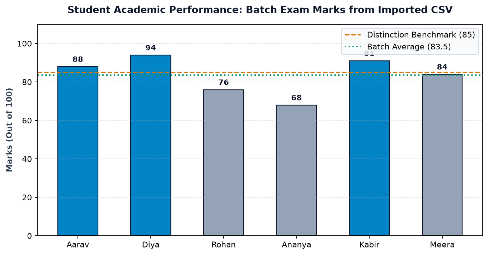
2. Department-Wise Academic Comparison
Departmental average marks aggregated from ingested CSV records:
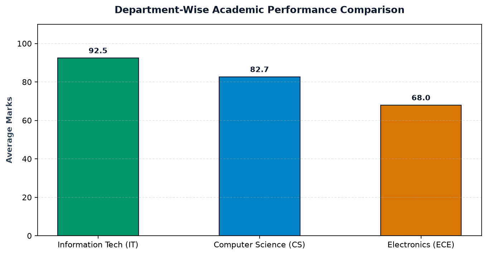
3. Category Revenue Analytics
Exported Excel workbook ke Category_Totals sheet se generate kiya gaya horizontal revenue chart:
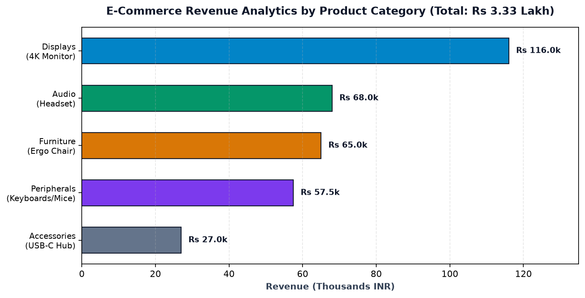
4. Six-Month Revenue Trajectory
Time-series monthly sales data imported from enterprise storage:
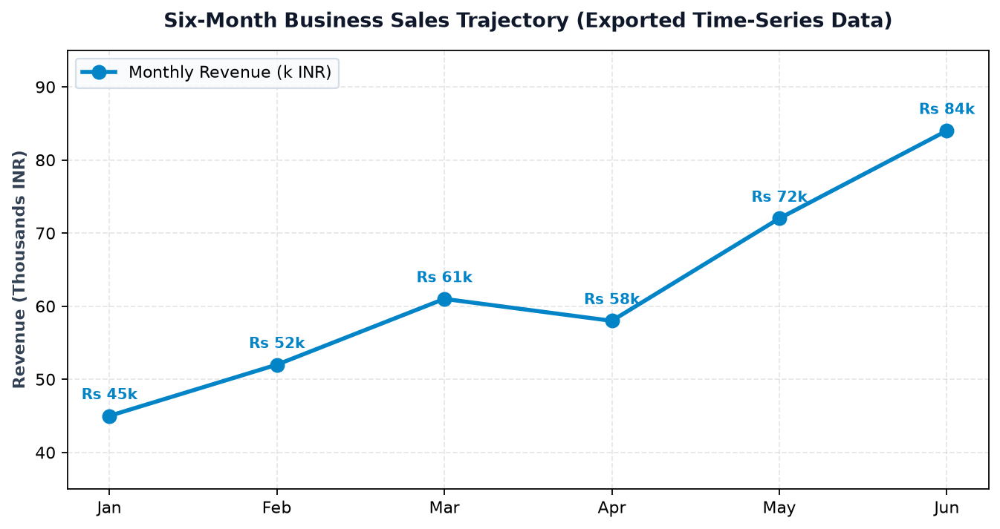
16. Top 12 Beginner Mistakes & Ingestion Pitfalls
Real-world file handling mein aane wale 12 common mistakes, unke symptoms, aur unke guaranteed fixes:
Error: df.to_csv('out.csv') exports default row indices as a column.
Fix: Hamesha df.to_csv('out.csv', index=False) pass karein.
Error: pd.read_csv('C:/Users/Rahul/Desktop/data.csv') fails on any other machine.
Fix: Use portable relative paths: pd.read_csv('data/students.csv') with pathlib.Path.
Symptom: Semicolon ya tab file read karne par table mein sirf 1 column aata hai.
Fix: Pass explicit delimiter: sep=';' ya sep='\t'.
Danger: df = pd.read_csv('data.csv'); ...; df.to_csv('data.csv')
Agar processing script mein bug hua, toh original raw data permanently destroy ho jayega!
Fix: Hamesha raw data ko read-only maanein aur processed results alag file mein save karein (jaise 'data_clean.csv').
Error: ImportError: Missing optional dependency 'openpyxl'.
Fix: Install engine via terminal: pip install openpyxl.
Symptom: UnicodeDecodeError: 'utf-8' codec can't decode byte 0xe9.
Fix: Use encoding='latin1' or encoding='cp1252'.
Symptom: KeyError: 'marks' when column is actually ' marks '.
Fix: Clean headers immediately after reading: df.columns = df.columns.str.strip().
Problem: Dates object dtype mein rehte hain, jisse time-series math kaam nahi karta.
Fix: Pass parse_dates=['date_column'] inside read_csv().
Problem: 'NA', 'missing', ya '-' string ban jaate hain aur numeric column ko object bana dete hain.
Fix: Use na_values=['missing', 'NA', '-'].
Error: df.to_csv('exports/daily/out.csv') fails with FileNotFoundError if folders don't exist.
Fix: Pre-create directory safely: os.makedirs('exports/daily', exist_ok=True).
Error: Calling df1.to_excel('file.xlsx', sheet_name='S1') then df2.to_excel('file.xlsx', sheet_name='S2') overwrites the entire file, deleting Sheet 1!
Fix: Use with pd.ExcelWriter('file.xlsx') as writer:.
Myth: "Maine column ko category ya float32 banaya tha, CSV waisa hi rahega."
Truth: CSV sirf plain text strings save karta hai. Read karte waqt agar specific type chahiye toh dtype={'col': 'category'} pass karna hoga.
17. Practice Questions & Challenges (39 Interactive Items)
File I/O aur data ingestion concepts ko test karne ke liye neeche diye gaye 39 challenges solve kijiye. Har question par click karke aap uska verified output, code solution aur detailed explanation dekh sakte hain.
Part A: Output Prediction Questions (10 Items)
Q1: What column appears in the output of pd.read_csv() if df.to_csv('out.csv') was called without index=False?
Output: 'Unnamed: 0'
Explanation: By default to_csv() saves DataFrame row index numbers without a header name. When reading back, Pandas names this unlabelled column 'Unnamed: 0'.
Q2: What is the shape of df read with pd.read_csv('data.csv', nrows=5)?
Output: (5, num_columns)
Explanation: nrows=5 limits the parser to reading only the first 5 rows of data (excluding the header row).
Q3: What happens if you run pd.read_excel('file.xlsx') on a file with 3 sheets without specifying sheet_name?
Output: Reads ONLY the first sheet (Sheet index 0).
Explanation: Default behavior of read_excel() is to load only the first worksheet as a DataFrame. To load all sheets, pass sheet_name=None.
Q4: What will pd.read_csv('data.csv', header=None).iloc[0, 0] return if row 1 of the file is 'student_id,name'?
Output: 'student_id' (as a data cell!)
Explanation: When header=None is passed, Pandas assigns integer column headers 0, 1, 2... and treats the first row as normal data.
Q5: What is the return type of pd.read_excel('file.xlsx', sheet_name=None)?
Output: A Python dict where keys are sheet names (strings) and values are corresponding DataFrames.
Explanation: sheet_name=None instructs Pandas to read all sheets into a dictionary.
Q6: What happens if a CSV file is separated by semicolons (;) but read with default pd.read_csv()?
Output: A DataFrame with only 1 column, where all values are concatenated with semicolons.
Explanation: Default separator is comma (,). When no commas are found, Pandas treats the entire line as a single string.
Q7: What does df.to_json(orient='records') produce?
Output: A JSON string representing a list of dictionaries: [{"col1": val1, "col2": val2}, ...]
Explanation: orient='records' is the standard format for web APIs where each record is an individual JSON object.
Q8: What is the value of pd.isna(df['score'].iloc[0]) if the CSV had '-' and na_values=['-'] was passed?
Output: True
Explanation: na_values=['-'] forces Pandas to interpret the dash as an IEEE 754 NaN missing value.
Q9: What happens if you call df.to_excel() twice consecutively with different sheet names on the same file?
Output: The second call overwrites the file completely, erasing the first sheet!
Explanation: Direct to_excel() calls recreate the file. You must use pd.ExcelWriter to append multiple sheets.
Q10: What does pd.read_csv('data.csv', usecols=['name', 'marks']).shape return for a 10-column, 100-row file?
Output: (100, 2)
Explanation: usecols extracts only the specified 2 columns while reading all 100 rows.
Part B: Hands-On Coding Exercises (10 Items)
Q11: Write code to read only columns 'student_id' and 'marks' from 'grades.csv'.
Code: df = pd.read_csv('grades.csv', usecols=['student_id', 'marks'])
Explanation: usecols prevents loading unneeded columns into RAM.
Q12: Write code to export df to 'clean_data.csv' without the row index.
Code: df.to_csv('clean_data.csv', index=False)
Explanation: index=False eliminates unwanted default integer row headers.
Q13: Write code to read a tab-delimited file named 'data.tsv'.
Code: df = pd.read_csv('data.tsv', sep='\\t')
Explanation: sep='\\t' parses tab-separated fields.
Q14: Write code to read a sheet named 'Q1_Sales' from 'sales_report.xlsx'.
Code: df = pd.read_excel('sales_report.xlsx', sheet_name='Q1_Sales')
Explanation: sheet_name targets the specific tab inside the workbook.
Q15: Write code to read only the first 50 rows of 'massive_file.csv'.
Code: df = pd.read_csv('massive_file.csv', nrows=50)
Explanation: nrows limits disk read to 50 data records.
Q16: Write code to treat strings 'N/A', 'missing', and 'NULL' as NaN values.
Code: df = pd.read_csv('data.csv', na_values=['N/A', 'missing', 'NULL'])
Explanation: na_values accepts a list of custom missing value representations.
Q17: Write code to set column 'roll_no' as the DataFrame index during CSV import.
Code: df = pd.read_csv('students.csv', index_col='roll_no')
Explanation: index_col sets the specified column as primary row index directly upon ingestion.
Q18: Write code to read a CSV encoded in Latin-1.
Code: df = pd.read_csv('data.csv', encoding='latin1')
Explanation: Resolves UnicodeDecodeError on legacy Windows / European files.
Q19: Write code to export df to JSON in records format with 2-space indentation.
Code: df.to_json('output.json', orient='records', indent=2)
Explanation: Creates a formatted list of JSON record objects.
Q20: Write code to strip leading and trailing whitespace from all column names of df.
Code: df.columns = df.columns.str.strip()
Explanation: Vectorized string stripping eliminates accidental space errors like ' marks '.
Part C: Multiple-Choice Questions (10 Items)
Q21: Which engine is required by Pandas to read modern .xlsx Excel files?
Options: A) openpyxl B) xlrd C) pyarrow D) xlsxwriter
Correct Answer: A) openpyxl
Explanation: openpyxl is the standard open-source library for reading and writing Excel 2010+ .xlsx files.
Q22: What does passing skiprows=3 to pd.read_csv() do?
Options: A) Skips row index 3 only B) Skips the first 3 lines of the file C) Reads every 3rd row D) Drops column 3
Correct Answer: B) Skips the first 3 lines of the file
Explanation: Useful when files contain comment headers, title banners, or metadata in the top lines.
Q23: Why is a relative path like 'data/orders.csv' preferred over an absolute path?
Options: A) It runs faster B) It is portable and runs on any machine with the repository C) It uses less memory D) CSV only supports relative paths
Correct Answer: B) It is portable and runs on any machine with the repository
Explanation: Absolute paths hardcode drive letters and user folders that do not exist on other machines.
Q24: Which context manager allows writing multiple DataFrames to different sheets in one Excel file?
Options: A) pd.MultiSheetWriter B) pd.ExcelWriter C) pd.Workbook D) pd.SheetManager
Correct Answer: B) pd.ExcelWriter
Explanation: pd.ExcelWriter manages the open workbook stream across multiple to_excel() calls.
Q25: What happens if df.to_csv('sub/data.csv') is executed but folder 'sub' does not exist?
Options: A) Pandas creates 'sub' automatically B) FileNotFoundError is raised C) Saves in root folder D) None
Correct Answer: B) FileNotFoundError is raised
Explanation: Python file writers require parent directories to exist. Use os.makedirs('sub', exist_ok=True) first.
Q26: Which parameter automatically parses date strings into datetime64 objects during CSV import?
Options: A) parse_dates B) date_format C) as_datetime D) convert_dates
Correct Answer: A) parse_dates
Explanation: parse_dates=['date_col'] invokes Pandas date parser during ingestion.
Q27: What is the primary advantage of CSV over Excel for big data pipelines?
Options: A) Has more fonts B) Plain-text simplicity, fast C-parsing, and lightweight file size C) Supports charts D) Encrypts data
Correct Answer: B) Plain-text simplicity, fast C-parsing, and lightweight file size
Explanation: CSV files have minimal overhead and can be parsed at gigabytes per second in high-performance engines.
Q28: How does Python's pathlib.Path handle Windows vs Linux path separators?
Options: A) Automatically uses the correct system separator (/ or \\) B) Only works on Windows C) Requires manual string replaces D) None
Correct Answer: A) Automatically uses the correct system separator (/ or \\)
Explanation: pathlib.Path abstracts OS-specific path separators seamlessly using the / operator.
Q29: What does df.to_csv('out.csv', columns=['name', 'marks']) do?
Options: A) Renames columns B) Exports only the specified subset of columns C) Error D) Changes data types
Correct Answer: B) Exports only the specified subset of columns
Explanation: The columns argument in to_csv() filters which features are written to disk.
Q30: What is the purpose of round-trip verification in data engineering?
Options: A) To double the file size B) To confirm that exported files can be re-imported without schema corruption C) Optional styling D) None
Correct Answer: B) To confirm that exported files can be re-imported without schema corruption
Explanation: Round-trip verification catches silent export errors, unwanted extra columns, and corrupted values immediately.
Part D: Debugging Challenges (6 Items)
Q31: Debug: df = pd.read_csv('C:\users\data\new.csv') -> SyntaxError: (unicode error)
Bug: Unescaped backslashes in Windows path: \u in \users is treated as a unicode escape sequence!
Fix: Use forward slashes 'C:/users/data/new.csv', a raw string r'C:\users\data\new.csv', or pathlib.Path.
Q32: Debug: df = pd.read_csv('sales.csv'); print(df['Revenue']) -> KeyError: 'Revenue'
Bug: Case sensitivity or whitespace in column name (e.g. 'revenue' or ' Revenue ').
Fix: Print df.columns.tolist() to inspect actual headers, and apply df.columns = df.columns.str.strip().str.lower().
Q33: Debug: df.to_excel('report.xlsx', sheet_name='Sheet1'); df2.to_excel('report.xlsx', sheet_name='Sheet2')
Bug: Second call overwrites the file, completely wiping out Sheet1.
Fix: Use with pd.ExcelWriter('report.xlsx', engine='openpyxl') as writer: and call to_excel(writer, ...).
Q34: Debug: df = pd.read_csv('orders.csv') -> 1 column with text 'ORD1;Chair;500'
Bug: File uses semicolon delimiter, but default comma separator was assumed.
Fix: Add explicit parameter: pd.read_csv('orders.csv', sep=';').
Q35: Debug: df = pd.read_csv('data.csv'); df['price'] is object dtype even though prices are numbers
Bug: Missing values are represented as custom text strings (e.g. 'N/A' or '-') which forced the column to object type.
Fix: Ingest with na_values=['N/A', '-'] to convert them to numeric NaN.
Q36: Debug: df.to_csv('exports/out.csv') -> FileNotFoundError: [Errno 2] No such file or directory
Bug: Parent folder exports does not exist on disk.
Fix: Add os.makedirs('exports', exist_ok=True) before exporting.
Part E: Real-World File-Handling Mini-Challenges (3 Items)
Q37: Challenge: Safely preview a 10GB CSV file without running out of RAM.
Solution:
sample_df = pd.read_csv('massive_10gb.csv', nrows=100)
print(sample_df.info())
Explanation: nrows=100 reads only a tiny fraction of the file for schema inspection, consuming less than 1MB of RAM.
Q38: Challenge: Read all CSV files in a directory and concatenate into one master DataFrame.
Solution:
from pathlib import Path
csv_files = Path('monthly_reports').glob('*.csv')
df_master = pd.concat([pd.read_csv(f) for f in csv_files], ignore_index=True)
Explanation: Uses glob to locate matching CSVs and concatenates them in an O(N) list comprehension.
Q39: Challenge: Export a DataFrame to both a clean CSV and a formatted Excel sheet with verified row counts.
Solution:
df.to_csv('output.csv', index=False)
df.to_excel('output.xlsx', sheet_name='Clean_Data', index=False)
assert pd.read_csv('output.csv').shape[0] == df.shape[0]
assert pd.read_excel('output.xlsx').shape[0] == df.shape[0]
Explanation: Exports both formats without row indices and immediately asserts row-count parity from disk.
18. Guided Hands-On Lab & Topic 6 Preview
Laboratory Challenge: The Multi-Branch Retail Ingestion & Consolidated Export Pipeline
Aapko ek retail chain ke do alag-alag branches (Mumbai aur Delhi) ke daily sales logs ingest karke consolidated business summary export karni hai:
import os import pandas as pd # 1. Simulate Branch Files mumbai_data = \"\"\"order_id,city,units,revenue M101,Mumbai,120,60000 M102,Mumbai,85,42500\"\"\" delhi_data = \"\"\"order_id,city,units,revenue D201,Delhi,140,70000 D202,Delhi,95,47500\"\"\" with open('mumbai.csv', 'w') as f: f.write(mumbai_data) with open('delhi.csv', 'w') as f: f.write(delhi_data) # LAB TASKS: # 1. Ingest both branch CSVs into DataFrames # 2. Concatenate them into a master DataFrame # 3. Calculate total company revenue and average units per order # 4. Export consolidated results to 'consolidated_sales.csv' (index=False) # 5. Export multi-sheet Excel with 'Master_Log' and 'Branch_Summary' # 6. Verify export integrity from disk df_mumbai = pd.read_csv('mumbai.csv') df_delhi = pd.read_csv('delhi.csv') df_consolidated = pd.concat([df_mumbai, df_delhi], ignore_index=True) branch_summary = df_consolidated.groupby('city')[['units', 'revenue']].sum().reset_index() # Clean CSV Export df_consolidated.to_csv('consolidated_sales.csv', index=False) # Multi-Sheet Excel Export with pd.ExcelWriter('retail_consolidated_report.xlsx', engine='openpyxl') as writer: df_consolidated.to_excel(writer, sheet_name='Master_Log', index=False) branch_summary.to_excel(writer, sheet_name='Branch_Summary', index=False) # Verify assert os.path.exists('consolidated_sales.csv') assert os.path.exists('retail_consolidated_report.xlsx') df_check = pd.read_csv('consolidated_sales.csv') print("--- CONSOLIDATED SALES MASTER ---") print(df_check) print(f"\nTotal Enterprise Revenue: Rs {df_check['revenue'].sum():,}") print(f"Total Units Sold: {df_check['units'].sum()}")
Summary Checklist: What You've Mastered
- ✔ CSV Ingestion:
pd.read_csv()with parameters:sep,usecols,nrows,na_values, andindex_col. - ✔ Clean CSV Export:
df.to_csv('out.csv', index=False)avoiding theUnnamed: 0trap. - ✔ Excel Operations: Reading sheets via
pd.read_excel()and writing multi-sheet workbooks viapd.ExcelWriterwithopenpyxl. - ✔ JSON Standards: Reading and writing web records with
orient='records'. - ✔ Plain Text & TSV: Python
open()for raw text vspd.read_csv(sep='\\t')for structured tabs. - ✔ Path Management: Portable relative paths with
pathlib.Pathand safe folder creation. - ✔ Import Troubleshooting: Resolving
FileNotFoundError, wrong delimiters, whitespace headers, and encoding issues. - ✔ Verification Protocol: The 7-step round-trip validation standard.
External datasets real world mein aksar incomplete hote hain (missing cells, sensor drops, unrecorded surveys). Agle topic mein hum seekhenge:
- Detecting missing values with
isna(),isnull(), and visual heatmaps. - Dropping incomplete rows/columns safely with
dropna()and threshold limits. - Imputing missing values with mean, median, mode, and forward/backward filling (
ffill/bfill). - Mathematical time-series interpolation with
interpolate()!